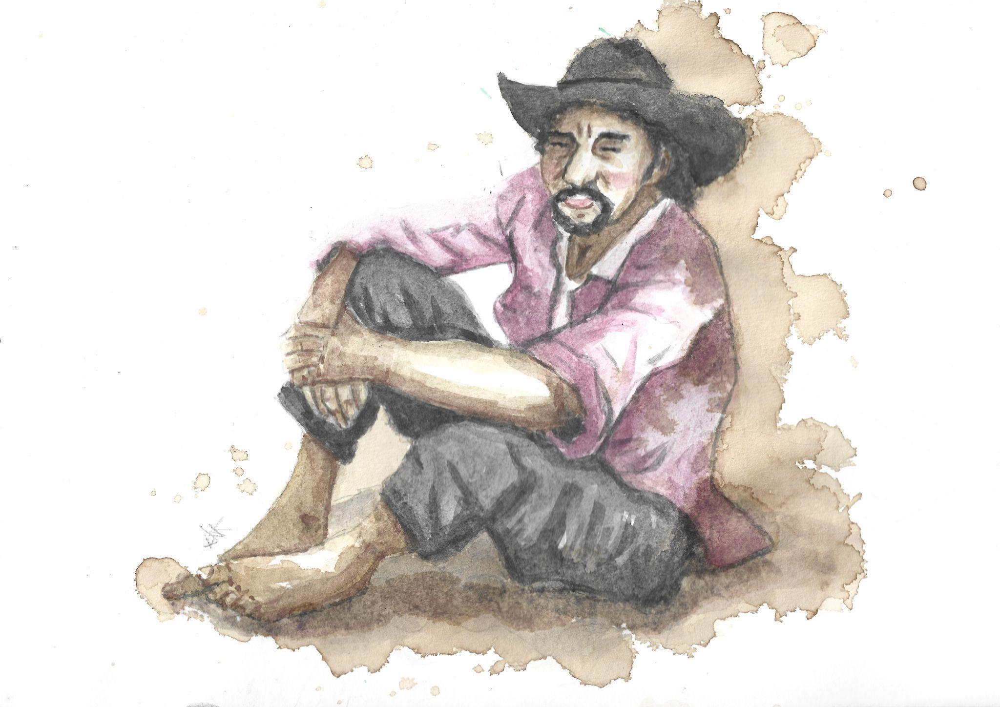
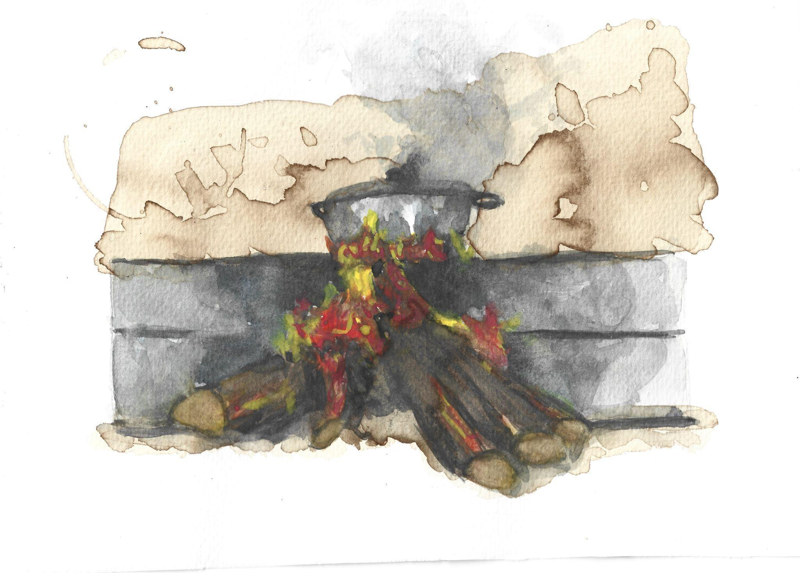
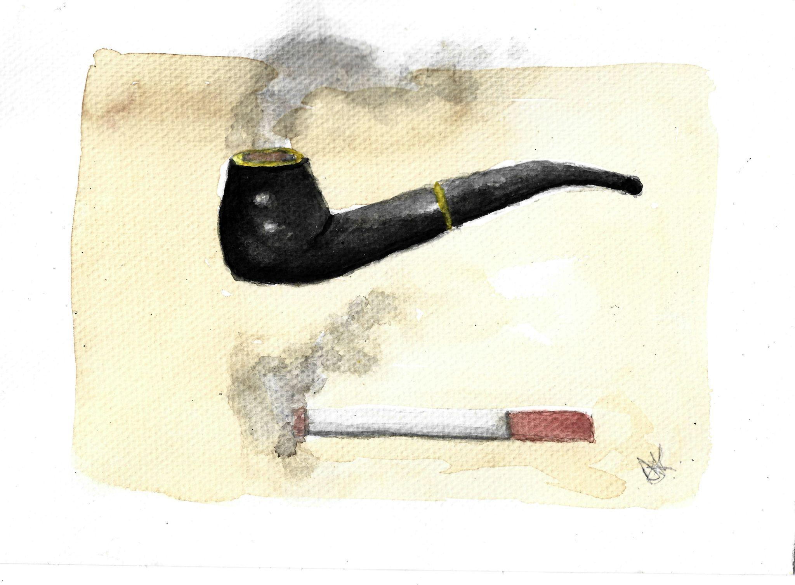
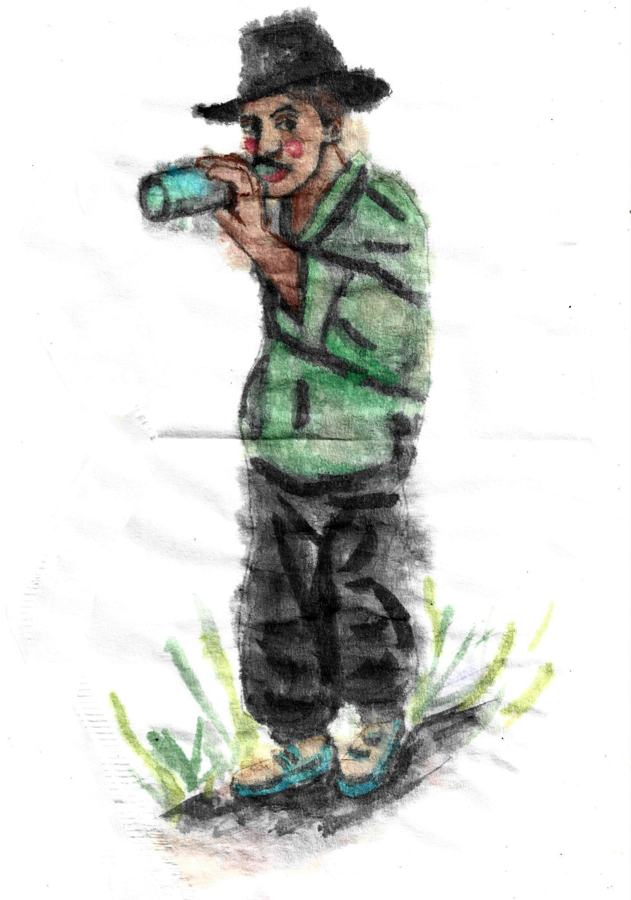
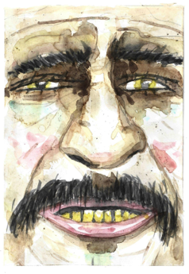
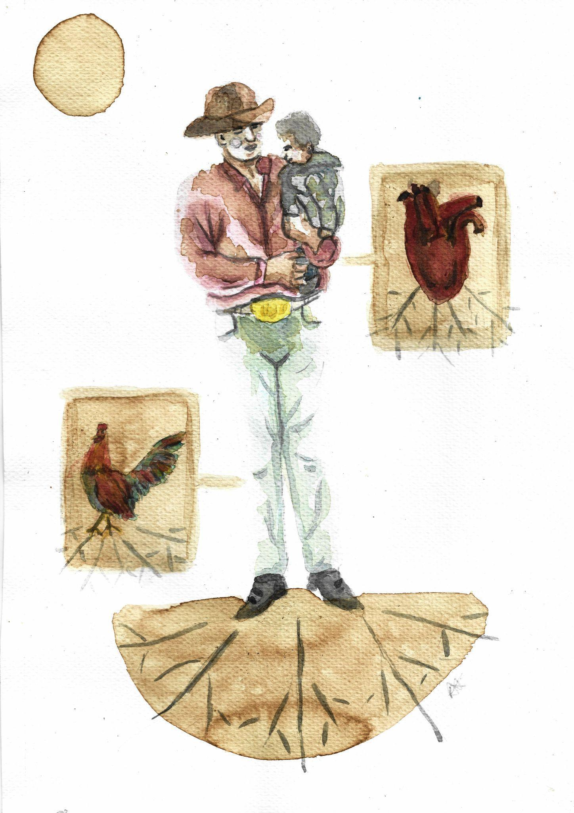
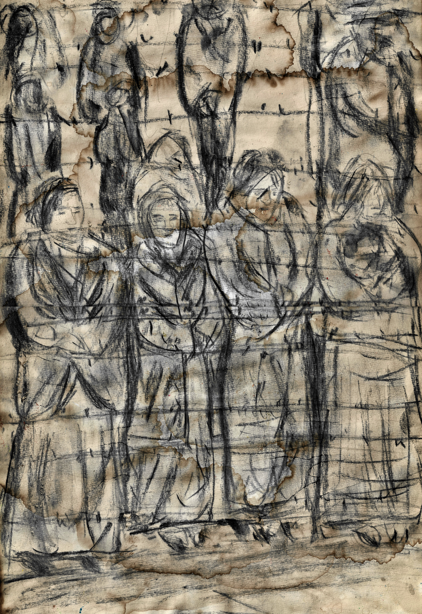

Saúde do homem cigano
- Citar os hábitos alimentares dos homens ciganos.
- Descrever as dificuldades no atendimento dos homens ciganos no sistema de saúde.
- Listar ações e demandas necessárias para a saúde e bem-estar dos homens ciganos.
Antes de iniciarmos essa aula sobre saúde do homem cigano, é importante destacarmos que a masculinidade cigana deve englobar homens trans, bissexuais, pansexuais ou homossexuais, uma vez que já existe a presunção que todo homem cigano é heterossexual ou cisgênero.

É inegável que a sociedade patriarcal e heterossexual são pilares de diversos fatores corrosivos nas vidas dos homens em geral. Mas se pensarmos apenas nos homens ciganos como provedores e responsáveis pela família e comunidade iremos esbarrar em ciladas coloniais e machistas, que empurram esses tais homens ao limite de sua saúde física e mental. Esses homens não precisam apenas serem provedores e líderes. Vale ressaltar que muitos vivem excluídos da sociedade e enfrentam o racismo e preconceitos diariamente.
Além de sustentarem uma imagem de viril, másculo, que culminam com a repressão de sentimentos, muitos homens ciganos possuem medo da sua vulnerabilidade e dos desejos reprimidos. Vivem muitas vezes em comunidades sem saneamento básico, sem emprego formal ou estudo, com um sistema de saúde que não abrange suas particularidades e necessidades. No entanto, isso também não os isentam da responsabilidade de seus atos. Os homens ciganos parecem “viver em bolhas”, muitas vezes sem acesso a estudos, formações acadêmicas, sem interesse por discussões conceituais e políticas acerca de literatura, filosofia, interseccionalidades culturais, raça e gênero.
Hábitos alimentares
Um dos fatos que mais se destacam entre as práticas alimentares dos ciganos, principalmente entre os Calóns, é que costumam produzir seu próprio alimento, desde a criação de animais como galinhas e porcos para o abate e o plantio de frutas e legumes, e principalmente, cozinhar sua própria comida. Comida industrializada como fast-foodé algo deslocado dos costumes Calón, principalmente por conta da questão socioeconômica baixa. Isso não quer dizer que não existe a opção para alguns, mas no geral é um certo modo de tradição e sobrevivência. Culturalmente, produzir e fazer seu próprio alimento é algo que os ciganos estão familiarizados. Isso inclui a medicina natural e tradicional.
A base alimentar Calón é feita principalmente de:
- grãos e cereais como arroz e feijão;
- carnes, principalmente a de porco e frango;
- carnes salgadas como a carne seca e embutidos (linguiças).
As refeições são ricas em todo tipo de gordura (animal e vegetal), sendo industrializadas ou não. Eventualmente falta o consumo de mais verduras e legumes, com exceção de batata e mandioca, principalmente quando a família ou comunidade não tem plantios em seus ranchos. Quando há pratos com legumes, costumam estar associados com carne e gordura, como mamão verde (ou abóbora) com carne seca.
A regionalidade é um fator importante nos costumes alimentares. As comidas e receitas feitas em uma panela só como feijão tropeiro, galinhada, mocotó, sopas, também se fazem presente por conta do número reduzido de panelas (jogos grandes de panelas de boa qualidade e sempre limpas são símbolos de orgulho, prosperidade e identidade).

Em geral, os homens e mulheres mostraram- se conhecedores de técnicas de abate e preservação da carne animal. O preparo da comida geralmente é feito em seus terrenos, usando lenha, blocos e tijolos, principalmente em reuniões e comidas servidas aos familiares e comunidade, o que não exclui o uso do fogão doméstico. Geralmente os homens se mostram à frente dos preparos das carnes, churrascos e afins. Em suma, ciganos prezam por uma alimentação rica em carboidratos, proteínas e gorduras.
Assim, entende-se que a comida faz parte da base familiar cigana, conforme citado no artigo Saúde das Comunidades Ciganas no Brasil: contextos e políticas públicas.
“Também é a partir da família que se expressam os modos de se comportar e agir frente aos aspectos cotidianos da vida, como a alimentação, o trabalho, a convivência intergeracional etc.”
(Azevedo e Toyansk, 2020, p. 167)
Por outro lado, quanto menor o poder aquisitivo de uma família cigana ou um cigano, mais difícil se torna efetivar hábitos alimentares saudáveis. A alimentação básica diária de forma balanceada, desde a primeira até a última refeição, com ovos e pães no café da manhã, arroz, feijão, carne e legumes no almoço e uma proteína e salada à noite, se torna um desafio. O trabalho exaustivo e a falta de tempo são facilitadores de uma má alimentação e a fuga aos ultraprocessados por rapidez ou pobreza. Também é preciso levar em consideração os excessos, devido à falta de informação, problemas de ansiedade e compulsões.
Veja a seguir o relato da cigana Calín Maria de Fátima na pesquisa "Produção Social dos Sentidos em Processos Interculturais de Comunicação e Saúde: A Apropriação das Políticas Públicas de Saúde para Ciganos no Brasil e em Portugal."
“Os principais problemas de saúde que a gente já encontrou nessas caminhadas: a questão da depressão; a questão da hipertensão; a questão da diabetes e o colesterol.”
(Aluísio de Azevedo, 2018, p. 460)
Apesar de tais relatos não serem exclusivos aos hábitos dos homens, podemos identificar tais problemas nas comunidades em geral e consequentemente aos homens também. Grande parte dos problemas de saúde dos homens ciganos são crônicos, como: a diabetes, hipertensão e colesterol. Isso ocorre devido a hábitos alimentares inapropriados, como o consumo de gorduras, carboidratos e sal em excesso. Além disso, é importante darmos destaque para a água potável que, embora seja essencial para os seres humanos, muitas vezes é escassa ou inexistente em muitos acampamentos e comunidades.
Observe a fala de Aluízio de Azevedo e Marcos Toyansk utilizada noGuia Orientador para a Atenção Integral à Saúde do Povo Cigano
“Muitos dos acampamentos onde vivem os povos ciganos não têm água encanada, energia elétrica e saneamento básico, ou seja, o esgoto corre ao céu livre, contaminando as águas que ainda poderão ser consumidas pelas pessoas. A transmissão das DTHA pode ser de forma indireta – por consumo de água/ alimentos contaminados – e direta – alguns agentes etiológicos também podem ser transmitidos de pessoa a pessoa.”
(Ministério da Saúde, 2022, p. 19 E 20)
Adentrando um pouco na comunidade dos ciganos Rom, uma pesquisa inédita para este curso foi realizada com Cláudio Iovanovith, liderança do Paraná, onde nos traz ritos e costumes distintos dos ciganos da etnia Rom Kalderash. Em seus relatos, podemos compreender que a tradição alimentar de sua família vem do Leste Europeu, em conversa com sua neta Hayanne Iovanovith sobre o médico que atendia sua família.
Clique para saber mais sobre cada relato:
Cláudio Iovanovith: “Ah, mas lembra que eu te falei que o nosso médico, o médico do meu pai, veio em casa numa festa e falou: escuta cigano, vocês comem isso normalmente?
Sarma, guibanitsa (pratos típicos dos roms), essas coisas? Falei: normalmente nas festas, né?! Daí ele falou: olha, é que vocês vêm lá do Leste Europeu e lá é 40º abaixo de zero, lá vocês queimam essa comida toda, aqui não, aqui é gordura que fica girando e vocês vão pro cemitério com 40 anos.”
Muitos pratos tradicionais consumidos pelos Rom têm alto teor de açúcares e gordura. Levando em consideração que tais costumes vêm de outro continente e o clima muito se difere do território brasileiro, em outra passagem o relato histórico nos diz mais sobre a alimentação dos ciganos rom.
Cláudio Iovanovith: “E também um outro costume é uma sobremesa de maçã, que a minha avó fazia. Daí eu fiz em casa, daí a Ray falou assim: - nossa vô, que sobremesa boa que você fez. Eu falei: não, isso não era sobremesa, isso era comida. Porque os ciganos da Europa andavam nas beiras das estradas e achavam as macieiras e já tinha um gelo, fazia um fogo, jogava a maçã lá dentro, punha açúcar e cravo e as canelas. E era almoço e janta três, quatro dias...”
Enquanto os mais velhos mantêm as tradições e tentam dosar tais pratos para as festividades e momentos importantes, a juventude romani passou a se distanciar desta alimentação, porém não de uma boa maneira. Acabam se envolvendo com a comodidade, rapidez e praticidade que o fast-food oferece.
Cláudio Iovanovith: “Também, infelizmente, trocaram a juventude Romani, trocaram a sarmá e a guibanitsa por outra comida, que são os fast foods. Apesar de ter gosto de borracha, não tem gosto de nada, as crianças fazem fila lá. É tudo gordinho com 10, 15 anos... obesos e só comem isso o dia inteiro: batata frita, hambúrguer, essas coisas todas.”
Podemos entender que os calóns e roms, além de costumes distintos, enfrentam particularidades na alimentação e saúde.
Podemos entender que os calóns e roms, além de costumes distintos, enfrentam particularidades na alimentação e saúde.
Tabagismo, alcoolismo e estresse

O consumo do tabaco sempre esteve presente entre os ciganos, fazendo assim quase que parte da identidade cultural. O tabaco puro no cachimbo ou enrolado em algum material e o próprio cigarro industrial com o avanço da modernidade e praticidade oferecida. Assim como o álcool para as festividades e por vezes produzido artesanalmente pelos próprios ciganos.
Quando falamos em vícios, é necessário também olhar para uma ótica de saúde mental, para que não culpabilize os dependentes sem entender a fundo suas respectivas necessidades e assim humanizar, pois tais problemas são somativos e muitas das vezes precedem uma estrutura frágil de vida na sociedade.
O artigo Saúde das Comunidades Ciganas no Brasil: contextos e políticas públicas, nos diz:
“Estudos de revisão sobre a saúde geral de povos ciganos concluíram que há falta de pesquisa, competência cultural e visibilidade sobre as necessidades de saúde dessas comunidades, menor expectativa de vida, maior carga de doenças e piores condições de saúde devido às desvantagens socioeconômicas, habitação inadequada e acesso precarizado aos serviços de saúde”.
(Aluízio de Azevedo, 2024)
O modo de vida precário resulta em estresse e, consequentemente leva à fuga para as substâncias toxicológicas. É certo que nem sempre o motivo por trás de uma dependência química será exclusivamente da vulnerabilidade social ou precedente de algum trauma, mas quando há uma leitura histórica de vulnerabilidade, esse fator precisa ser levado à discussão.

O consumo do tabaco sempre esteve presente entre os ciganos, fazendo assim quase que parte da identidade cultural. O tabaco puro no cachimbo ou enrolado em algum material e o próprio cigarro industrial com o avanço da modernidade e praticidade oferecida. Assim como o álcool para as festividades e por vezes produzido artesanalmente pelos próprios ciganos.
Vale ressaltar que o tabagismo ou alcoolismo não é apenas uma problemática masculina É de suma importância que se entenda as complexidades, os estudos e as visões da própria sociedade sobre o assunto. É de desconhecimento qualquer dado público ou infográfico a respeito do tabagismo e alcoolismo relativos aos povos ciganos, assim como não há estatísticas sobre número de mortes e agravamentos nesse contexto em território brasileiro.
As limitações ainda observadas na disponibilidade e na qualidade das informações estatísticas nos sistemas de informação em saúde, bem como a ausência de dados específicos sobre a população cigana no Censo Demográfico realizado pelo IBGE, dificultam a elaboração de políticas públicas e o planejamento de ações voltadas à formação e à qualificação de profissionais de saúde, gestores e da própria comunidade cigana. Sabemos que é um problema real e que deve ser combatido, mas não se tem a real dimensão. Em 2018, foi realizada uma visitação à comunidade do Rancho de Cima, em Sousa na Paraíba, para a conscientização do homem cigano e o fumo do cigarro, conforme podemos ver no artigo “Ações educativas como possibilidade no repensar do homem cigano frente ao consumo do cigarro”.
A ação foi descrita como:
“O estudo objetivou oportunizar ambiente de discussões sobre as consequências oriundas do consumo do tabaco pela população cigana.”
(Revista Enfermagem Atual, 2021)
A pesquisa não apresenta dados aprofundados sobre a própria comunidade visitada, o que evidencia a necessidade de ampliar a produção de informações sobre a população cigana. Embora tenha identificado questões relevantes relacionadas à comunidade, o estudo não apresenta, de forma aprofundada, proposições ou indicações ao poder público para o seu enfrentamento.

As questões odontológicas também merecem destaque, visto que o tabagismo possui ligação direta com o aspecto bucal. Os ciganos possuem como parte de identidade e cultura os dentes de ouro. Geralmente são próteses em ouro que substituem dentes perdidos por algum problema de saúde e perda. Os dentes de ouro são esteticamente belos para os ciganos e muitas das vezes conotam prosperidade. Mas, nem por isso, significa que todas as pessoas ciganas tenham uma boa saúde bucal. É imprescindível que a integralidade da saúde seja garantida e que a soberania alimentar e saúde mental sejam vistas em conjunto com outros aspectos e cuidados de saúde. Sabemos, por exemplo, que a falta de dentição afeta profundamente a autoestima da pessoa.
Em uma outra abordagem, agora sobre o estresse, podemos ver que a narrativa de líder e provedor, apesar de nociva e causadora de muita sobrecarga em alguns casos, se mostra redundante quando os mesmos, em algumas comunidades, impedem a participação das mulheres nas tomadas de decisões e responsabilidades. Isso pode ser observado no depoimento e pesquisa inédita realizada para este curso com Sara Macêdo, cigana Calín de Goiás.
Sara Macêdo - Minha experiência e opinião sobre os homens ciganos aqui de Goiás é a de que, por ser um lugar que se organiza por clãs patriarcais e sobrenomes dos maridos, todas as decisões maiores são dadas aos homens.
É importante ressaltar que existem comunidades lideradas por mulheres e que muitas delas respondem e articulam pela questão cigana. Outra questão é o casamento precoce, pois apesar de muitos não adotarem essas práticas atualmente, formar e se responsabilizar por uma família de forma precoce impossibilita uma série de oportunidades e aprendizagens, como diz Sara em seu depoimento.
Sara Macêdo - Casamento e noivado cedo prejudica tanto homens quanto mulheres, na minha opinião. Muito raro ver um casal de noivos de 16 anos que continua os estudos.
Formar família, ser pai, marido, trabalhar muitas vezes de forma autônoma, sem assistência ou benefícios, são fatores que causam uma pressão gigantesca nos homens ciganos. Em uma última abordagem, Sara nos conta sobre a saúde mental dos homens ciganos fora de seus contextos tradicionais.
Sara Macêdo - Todos os homens da minha família que saíram da vida mais tradicional estão com ansiedade ou tendo problemas de saúde mental.
Formar família, ser pai, marido, trabalhar muitas vezes de forma autônoma, sem assistência ou benefícios, são fatores que causam uma pressão gigantesca nos homens ciganos. Em uma última abordagem, Sara nos conta sobre a saúde mental dos homens ciganos fora de seus contextos tradicionais.

Uma questão que merece destaque é a orientação sexual dos homens ciganos. Assumir-se homossexual é um processo doloroso e estressante, pois além de temer algum tipo de violência física direta, existe a exclusão da comunidade e seu núcleo social familiar, seja pelos demais ou a si mesmo como modo de proteção ou medo de não ser aceito. É necessário coragem para se assumir, além de necessitarem de um grande apoio psicológico. É claro que essas narrativas LGBTQIAPN+ não são exclusivas a nenhum grupo racializado. Romper é sempre doloroso, mas necessário. Para isso, é preciso que se tenha bases educacionais e de acolhimento. Afinal, além das batalhas internas, o contexto social em geral é um fator a pressionar. Os estereótipos dos homens ciganos como viris, heterossexuais e chucros também fazem parte do imaginário popular.
Preconceito e desconfiança no atendimento
Parte da problemática do preconceito está atrelada à imagem do homem cigano, a partir dos estereótipos e do racismo difundido numa imagem de agressivo, viril e até mesmo de ladrão que contaminam o imaginário popular. Para além dessas margens, ainda existem questões culturais e os saberes tradicionais das quais não ciganos, juntamente com um sistema público, possuem dificuldade em mediar o tratamento ocidental e as particularidades dos ciganos.
Observe o que diz o artigo Saúde das Comunidades Ciganas do Brasil: contextos e políticas públicas:
“A relação intercultural entre ciganos e os serviços de saúde é permeada por conflitos. Por se configurar como experiências atravessadas por muitas mediações, há dificuldades para que as políticas públicas de saúde cheguem até os ciganos. Em geral, são indivíduos que possuem modos diferentes de se colocar no mundo e práticas milenares sobre a saúde, que lhes causam problemas com o preconceito institucional dos serviços públicos de saúde, ferindo o princípio da equidade.”
(Azevedo e Toyansk, 2020, 2020, p. 180)
Em contrapartida, os homens ciganos encontram dificuldades mediante o atendimento médico em diversos fatores. Alguns homens casados, por exemplo, podem exigir que certos exames e atendimentos sejam feitos por outros homens por conta das questões matrimonial e masculina. Sabemos que no sistema de saúde pública, o profissional disponível que prestará o atendimento, mas tal fato pode fazer com que alguns homens ciganos não realizem suas consultas e tratamentos com mulheres, principalmente quando a consulta envolve os órgãos genitais.
Outro fator que merece destaque é a ida ao médico como sinal de fraqueza. Não ir ao médico pode ser considerado como um sinal de orgulho e saúde, o que muitas das vezes acaba em circunstâncias trágicas e tardias. O medo da internação e de maus tratos são fatores presentes, uma vez que existem preconceitos e estigmas difundidos aos ciganos. Veremos esse ponto a seguir.
Prevenção de agravos, promoção e proteção da saúde
A pauta “Saúde do Homem Cigano” ainda é pouco difundida ou falada, seja entre os ciganos e os órgãos de saúde. É necessário apresentar caminhos e resoluções diversas.
Então, como prevenir e promover?
A abordagem mais imediata é o contato das comunidades ciganas com materiais educacionais sobre hábitos saudáveis, sexualidade, alimentação e a importância do acompanhamento clínico em diferentes etapas da vida, além dos malefícios e perigos do tabagismo e alcoolismo.
No Guia Orientador para a Atenção Integral à Saúde do Povo Ciganovemos as seguintes demandas:
“Algumas áreas são cruciais para a prevenção e promoção da saúde para essa população, como: odontologia, tabagismo, alcoolismo, cânceres de mama e de próstata, área da nutrição, cardiopatias, pressão alta, diabetes, problemas estomacais, como gastrite, acompanhamento do pré-natal e comorbidades específicas à saúde do homem”.
(Ministério da Saúde, 2022, p. 26)
Em uma segunda abordagem, é preciso preparar o sistema de saúde público e os profissionais para tais demandas e atendimento. É importante salientar que, mais do que identificar demandas, é necessário colocar em prática ações governamentais e institucionais para os povos ciganos. Isso engloba exames médicos nas comunidades, acompanhamentos terapêuticos, distribuição de medicação gratuita para tratamentos crônicos ou que auxiliem no combate ao tabagismo, um controle aprofundado com base nas informações obtidas nas comunidades.
Tratamento, reabilitação e a redução de danos
No âmbito do SUS, as ações de cuidado relacionadas à saúde mental, ao uso de álcool e outras drogas integram a Rede de Atenção Psicossocial (RAPS). A RAPS é constituída por diferentes pontos de atenção, que devem atuar de forma articulada e complementar. Entre eles está a Atenção Primária à Saúde, os Centros de Atenção Psicossocial (CAPS), os serviços de urgência e emergência, os Serviços Residenciais Terapêuticos, as Unidades de Acolhimento e os leitos de saúde mental em hospitais gerais, entre outros dispositivos previstos na organização da rede.
A articulação entre esses pontos permite construir estratégias de cuidado de acordo com as necessidades de cada pessoa, favorecendo a continuidade do acompanhamento e evitando a fragmentação da atenção. Nesse contexto, a Atenção Primária à Saúde (APS) desempenha papel fundamental na identificação das necessidades de cuidado, no acompanhamento das pessoas em seu território e na articulação com os demais pontos da RAPS, contribuindo para a continuidade do cuidado.
No cuidado às pessoas que fazem uso de álcool e outras drogas, a RAPS orienta-se pela perspectiva do cuidado em liberdade, da redução de danos e do respeito aos direitos humanos, priorizando a inserção territorial, os vínculos familiares e comunitários e a articulação entre os diferentes pontos da RAPS. Essa perspectiva se contrapõe ao modelo manicomial, historicamente marcado pelo isolamento e pela institucionalização de pessoas em sofrimento psíquico.
Porém, a história da atenção em saúde mental evidencia que grupos socialmente vulnerabilizados, incluindo pessoas racializadas, com pertencimento étnico e povos com modos de vida diversas – como os povos ciganos - estiveram sujeitos a processos de exclusão, institucionalização e outras formas de violência. Nesse sentido, considerar a dimensão étnica no cuidado em saúde mental é fundamental para prevenir práticas de segregação e assegurar uma atenção pautada na dignidade, na autonomia, nos direitos e na participação familiar e comunitária.
. Clínicas de reabilitação e comunidades terapêuticas, focados na internação prolongada e isolamento para o tratamento de pessoas com problemas no uso de alcool e outras drogas, estão presentes em diferentes regiões do Brasil e, em algumas destas instituições, são relatadas práticas de atendimento que podem envolver abordagens inadequadas e não orientadas pela RAPS, com impactos sobre a dignidade e a integridade das pessoas atendidas. Tais ações podem acarretar na ineficácia do cuidado , visto que gera o desenvolvimento de mais sofrimento psíquico.
Nesse contexto, observe o trecho da entrevista“Os manicômios hoje se chamam comunidades terapêuticas”da Escola Politécnica de Saúde Joaquim Venâncio / Fiocruz:
“O certo seria incorporar os usuários de álcool e outras drogas dentro dessa rede psicossocial, por meio dos Caps AD [Centro de Atenção Psicossocial – Álcool e Drogas] que atendesse essa população. Mas o apelo da classe burguesa, dos interesses imobiliários, da higienização social, acabou consolidando um retorno dos manicômios que hoje se chamam comunidades terapêuticas. Elas têm a mesma lógica dos manicômios, de tirar o sujeito de circulação e segregá-lo, afastá-lo das relações sociais. Isso vai contra tudo o que se pensou para a saúde mental, porque compreendemos que aquele que sofre psiquicamente, ele precisa estar nas suas relações sociais porque a sua diferença não impede de estar trabalhando, fazendo suas atividades, trocando com seus familiares."
(Escola Politécnica de Saúde Joaquim Venâncio / Fiocruz: 2022)
No contexto da atenção às pessoas que fazem uso de álcool e outras drogas, a redução de danos constitui uma abordagem de cuidado que se diferencia das estratégias centradas exclusivamente na abstinência, priorizando a autonomia, o vínculo com os serviços de saúde e a redução dos riscos e danos associados ao uso de substâncias. Essa perspectiva permite desenvolver estratégias de cuidado de forma territorial e articulada à rede de atenção, sem pressupor necessariamente o afastamento da pessoa de seu convívio familiar e comunitário. No caso da população cigana, é importante considerar a centralidade dos vínculos familiares e comunitários em sua organização social e cultural. Os ciganos não aceitam nenhum tipo de confinamento ou isolamento de seus familiares.

É preciso compreender que a história cigana é repleta de enclausuramento, confinamentos, tortura e perseguição como o próprio Samudaripen. O holocausto cigano é uma abominação, da qual as práticas manicomiais muito se assemelham. Neste cenário de racismo estrutural e institucional, atender com dignidade e respeito a população cigana significa uma reparação histórica. Para a comunidade cigana, um familiar é uma extensão de si e da sua cultura e perdê-lo é um elo que se rompe. Para um cigano, ter sua liberdade tomada é como perder parte da sua existência.
Quando nos relacionamos com comunidades tradicionais estamos falando de povos que mantiveram suas identidades e cosmologia de modos de vida independente da estrutura dominante. Autonomia, nestes casos, é essencial. As práticas de isolamento social e confinamento não constituem estratégias adequadas ao cuidado em saúde mental, especialmente quando desconsideram a autonomia das pessoas atendidas. No caso da população cigana, as estratégias de cuidado e redução de danos devem considerar suas especificidades culturais e a importância dos vínculos familiares e comunitários, priorizando formas de cuidado em liberdade que respeitem a autonomia, a dignidade e os modos de vida dessas comunidades.